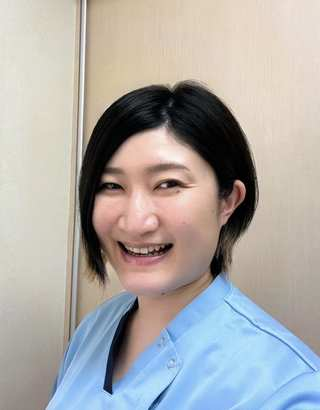

福岡歯科 日本橋茅場町院では、歯科筋筋膜セラピー（シカキンセラピー）の考え方を取り入れ、口腔周囲の筋・筋膜やセルフケアにも目を向けたサポートを行っています。
初回相談・お問い合わせ

医療法人社団明徳会福岡歯科 日本橋茅場町院
〒103-0025東京都中央区日本橋茅場町1-8-3JP茅場町ビル3階
TEL 03-3664-1145
東京メトロ日比谷線・東西線「茅場町駅」6番出口 徒歩1分
Googleマップ
診療時間
月・水・金 9:30–13:00 / 14:00–18:00火・木 9:30–13:00 / 14:00–19:00土 9:30–13:00 / 14:00–17:00
休診：日曜・祝日、第1・第3・第5土曜日
予約・お問い合わせ
症状や状態を確認し、必要に応じて適切な診療・セルフケアをご案内します。
福岡歯科へ問い合わせる